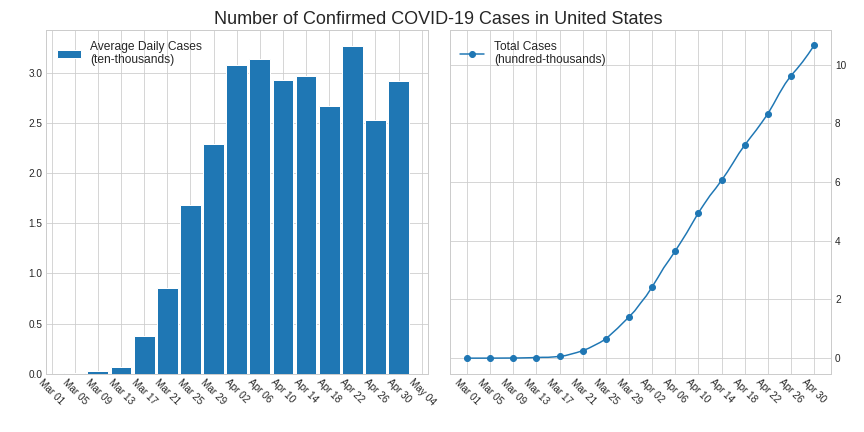
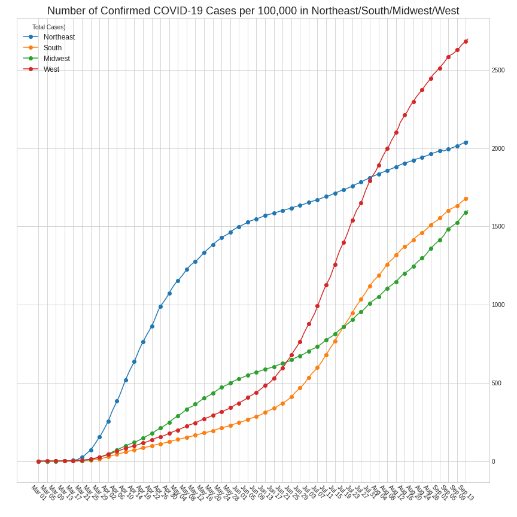
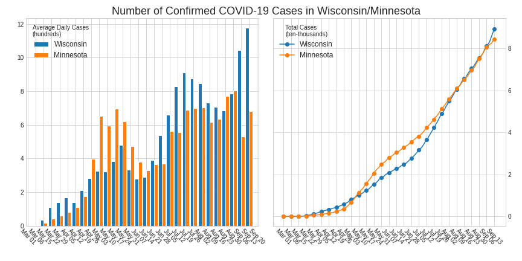
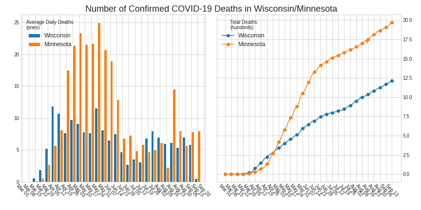
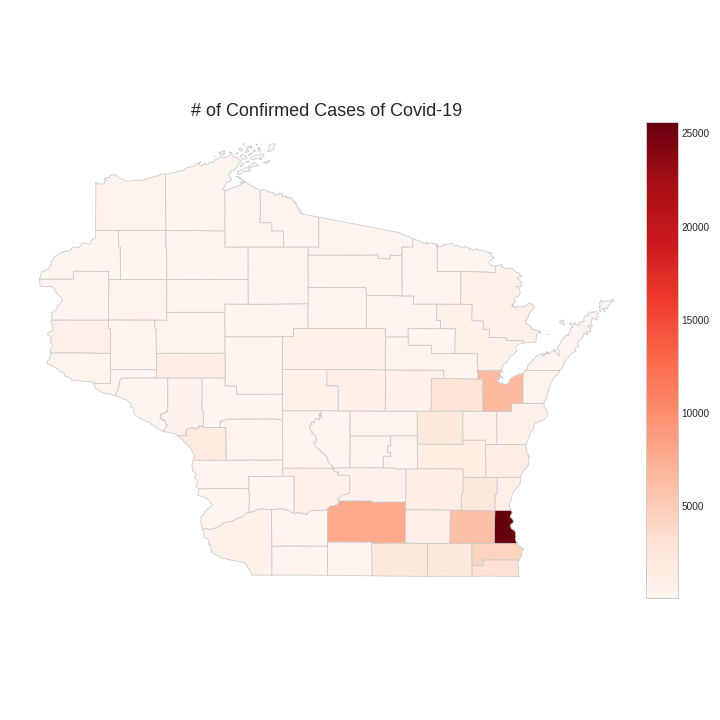
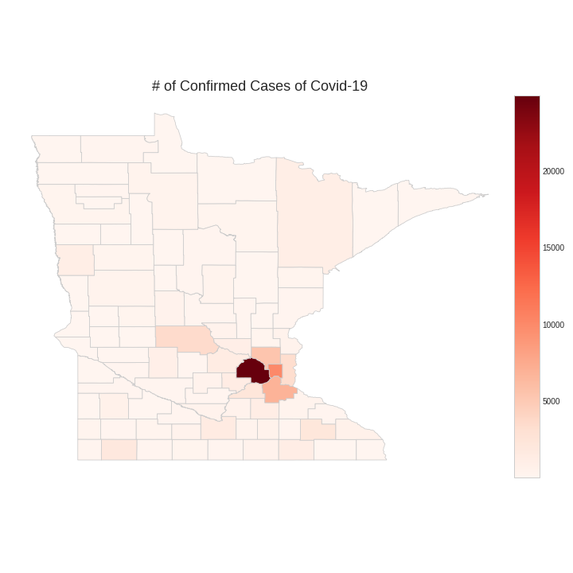
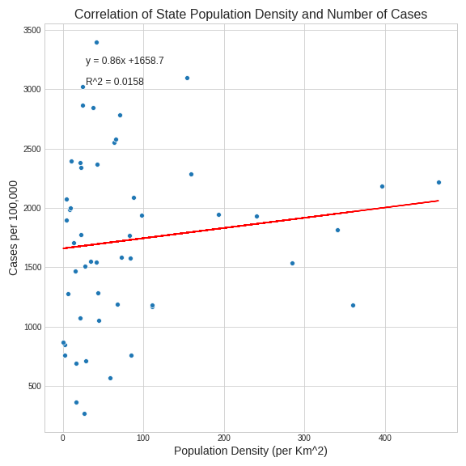
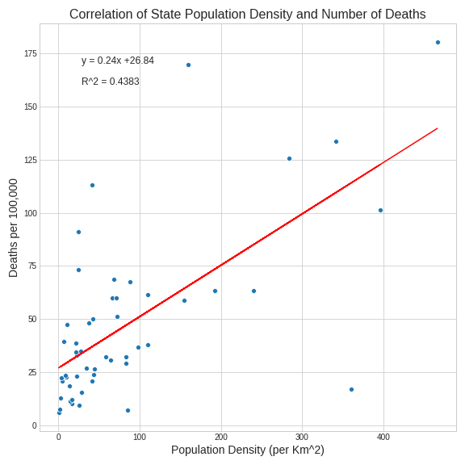
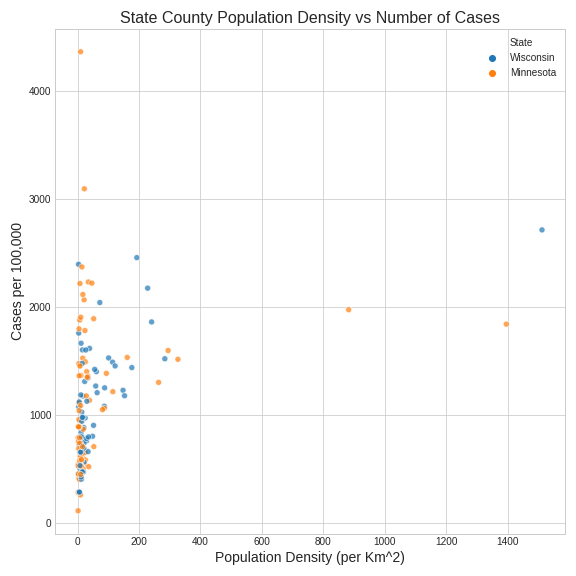

We examine that there were a couple states that began as major centers for the virus (namely California, Washington, Illinios) in the begining of the pandemic, but slowly became dwarfed by the number of cases in New York, which currently has over 300,000 cases.
How quickly has the number of cases of COVID-19 grown within the US?
From this graph we can see how COVID-19 has progressed since the beginning until recently. Over the course of March to May the United States has went from 0 to over 1,000,000 cases. This puts the United States well above any other country in terms of total cases, with the next closest beign Spain with about 200,000 at the time.
We can also see that while the new average daily cases doesn't seem to be increasing quite as dramatically, currently sitting at slightly below 30,000 cases a day, it also hasn't been shown to be decreasing as of yet.
It's safe to to say that it may be a while before new cases start to decrease, but this could be a positive, as it may actually be a sign that measures that the government has taken are working!

We can see that between March 1st and April 26th the Northeast had disproportionatly more cases, with about 1,100 cases per 100,000 opposed to the other regions which had less than 300 cases per 100,000 each as of April 26th. And while the Northeast can be seen to be lowering it's average daily cases the number is still. almost triple the other regions combined.
We can see from this figure that while Wisconsin has aproximatly 1,500 more cases, Minnesota shows the greatest increse in average daily cases, outpacing Wisconsin by over 1,000 average daily cases.
So while Wisconsin may have the higher amount of cases, the Coronavirus is spreading faster in Minnesota. But this raises the question; how does this high rate of new cases affect mortality in the state?

From this figure we can see that although Wisconsin has more cases, Minnesota has about 50 more deaths. We can also see that the average daily deaths in Minnesota is increasing at a much faster rate, with the gap between the two states being about 11 more average daily deaths. Thus, as with the amount of cases, while the pure amount of deaths were relativley close, the average daily amount was growing much faster. This could possibly be due to the fact that Minnesota's higher rate of average daily cases caused hospitals to be more overwhelmed, which is exactly what the 'Stay at Home' orders were trying to prevent. Interestingly, though the number of daily cases in Wisconsin has been rising, the number of daily deaths has been falling. This trend possibly indacates an increase in the quality of care as hospitals have become more experienced.
Which Wisconsin counties have been impacted the most by COVID-19
From this graph we can see that the total amount of cases in Wisconsin are disproportionately from one or two counties. Specifically, Milwaukee County has an extremely large amount of cases relative to the rest of the state, sitting at around 3,000 cases in the county, with the next highest being Brown County with around 1,500. Both these counties contain dense urban areas, namely Milwaukee and Green Bay respectively. So the reasonable next question is; how has COVID-19 affected Minnesota's counties?
Which Minnesota counties have been impacted the most by COVID-19
Similar to the Wisconsin graph, the Minnesota graph also shows that one county has a much greater amount of cases than the rest of the state. This graph shows that Hennepin County has over 1,750 cases, with the next highest, Nobles County, with about 1,000 cases. As expected, Hennapin County, which contains much of the Minneapolis-St.Paul-Bloomington Metropolitan area, has the largest amount of cases relative to the state. However, contrary to what we see happening in Wisconsin, Nobles County is a realtivaly rural area with no major city that has seen a spike in cases. Upon further research, it was discovered that an outbreak at a meat packing factory is the cause of this rural outlier.
Is there a correlation between population density and number of cases in a state?
In this graph we can see the correlation between case number and population density. And as one would expect, there is a sharp positive regression line shown with a slope of 2.43. This implies that we can expect areas with more people per unit area, we can expect a higher amount of cases per 100,000 people.
From this we can infer that as population increases, the chance of catching the virus also increases at high rate. But how does this relate to the mortality rate; that is what is the correlation between deaths and population density?

To answer the above question, compared to the last graph, this regression line has a much smaller slope, sitting at 0.15. So while there is still a positive correlation, the number of deaths realtive population density is not quite as intense as cases per 100,000 people. The reason there may not be as strong of a correlation in this graph is likely due to the numerous factors that lead to mortality. Deaths from COVID-19 depend on many variables including: hospital capacity and care, preexisting conditions, and age.
These past two graphs may help explain why a state like New York, containing New York City's extremely dense metropolitan area is currently accounting for most of the United State's cases and deaths.

It appears on avergae Minnesota has less dense counties but more cases per county. However, Wisconsin's densest counties are more affected than Minnesota's. What may account for the outliers in this graph, population density wise?
As discussed earlier, we can infer that these points on the far right side of the graph represent urban counties which would explain why they sit firmly past a poulation density of 800, while the rest of the data points sit withing a range from 0 to 250. Due to the normalization of the data, small counties where outbreaks occured such as Nobles MN are the highest data points instead the big cities.